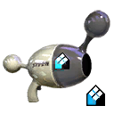
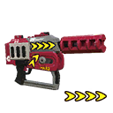
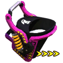
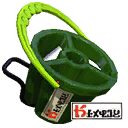
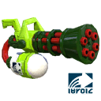
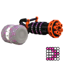
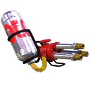
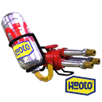

| Bild | Name | Preis | Level | Freischalten durch | Dabei seit Version | Sub-Waffe | Spezial | Reichweite | Explosion | Feuerrate | Details |
|---|---|---|---|---|---|---|---|---|---|---|---|
|  | Luna Blaster Neo | 8700 | 15 | DLC | 1 | Splat Bomb | Bomb Rush | 10 | 80 | 30 | Klick |
 |
Custom Range Blaster | 10800 | 17 | DLC | 1 | Splat Bomb | Kraken | 35 | 60 | 10 | Klick |
 |
Rapid Blaster Pro | 11200 | 16 | DLC | 1 | Seeker | Inkzooka | 65 | 35 | 30 | Klick |
|  | Rapid Blaster Pro Deco | 18200 | 20 | DLC | 1 | Disruptor | Killer Wail | 65 | 35 | 30 | Klick |


| Bild | Name | Preis | Level | Freischalten durch | Dabei seit Version | Sub-Waffe | Spezial | Reichweite | Feuerkraft | Leichtheit | Details |
|---|---|---|---|---|---|---|---|---|---|---|---|
|  | Slosher Deco | 8300 | 10 | DLC | 2 | Splash Wall | Kraken | 52 | 90 | 50 | Klick |
|  | Tri-Slosher Nouveau | 9900 | 15 | DLC | 2 | Seeker | Echolocator | 33 | 80 | 70 | Klick |
| Kein Bild vorhanden. | BigBall_Launcher00 | 13500 | 12 | DLC | 3 | Splat Bomb | Bomb Rush | 40 | 100 | 30 | |
| Kein Bild vorhanden. | BigBall_Launcher01 | 28500 | 18 | DLC | 3 | Sprinkler | Inkzooka | 40 | 100 | 30 |
| Bild | Name | Preis | Level | Freischalten durch | Dabei seit Version | Sub-Waffe | Spezial | Reichweite | Aufladetempo | Beweglichkeit | Details |
|---|---|---|---|---|---|---|---|---|---|---|---|
|  | Zink Mini Splatling | 9400 | 13 | DLC | 2 | Disruptor | Bubbler | 58 | 80 | 90 | Klick |
|  | Heavy Splatling Deco | 9200 | 9 | DLC | 2 | Point Sensor | Kraken | 78 | 40 | 50 | Klick |
|  | Hydra Splatling | 11600 | 11 | DLC | 2 | Splat Bomb | Echolocator | 87 | 10 | 20 | Klick |
|  | Custom Hydra Splatling | 29900 | 20 | DLC | 2 | Sprinkler | Bubbler | 87 | 10 | 20 | Klick |